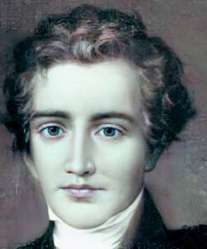
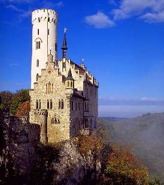

СКАЗКУ СДЕЛАТЬ БЫЛЬЮ
Вчера вспоминали одну советскую песню, сегодня вспомним другую.
Однажды мой японский друг-славист ужасно меня рассмешил, высказав предположение, будто печальная шутка советских шестидесятников «Мы рождены, чтоб Кафку сделать былью» означает просветительское намерение интеллигенции добиться разрешения на публикацию в СССР произведений Франца Кафки. Я ему объяснил, что нет — речь шла о материализации совсем другого проекта.
Но воплощение литературной фантазии в жизнь — в сущности идея преотличная. Если, конечно, воплощать не “Коммунистический манифест”, произведение двух лондонских сказочников, пугавших людей разгуливающим по Европе призраком, а что-нибудь красивое. Например, фантазии Вильгельма Гауфа, автора романа «Лихтенштейн». Писатель-романтик, родившийся 29 ноября 1802 года и проживший очень коротенькую, всего двадцатипятилетнюю жизнь, оставил о себе память не только в литературе, но и в архитектуре.
Один из его читателей и поклонников, герцог Вильгельм фон Урах, настолько влюбился в гауфовский вымышленный замок Лихтенштейн, что решил построить его наяву. И построил.
Это совершенно волшебное, воздушное сооружение, парящее над горной долиной, словно райское видение. Но почему-то грустное — как судьба Гауфа.
Впервые побывав в замке Лихтенштейн много лет назад, я решил, что однажды тоже напишу про него сказку. И написал — правда, не сказку, а грустную и страшную историю (6-я глава романа «Яма»).
Давайте делать былью лишь хорошие сказки, а со страшной былью сталкиваться только в сказках.